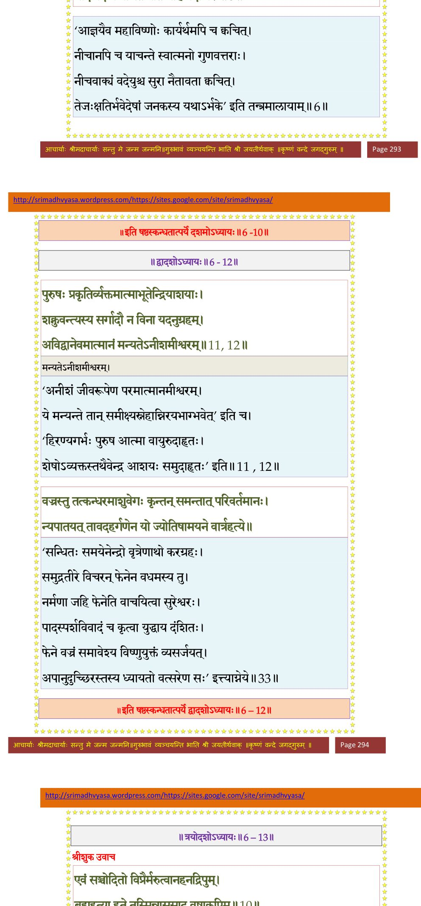

स्कन्ध 6 · अध्याय 10
श्लोक १
श्रीशुक उवाच–
इन्द्रमेवं समादिश्य भगवान् विश्वभावनः ।
पश्यतामनिमेषाणां तत्रैवान्तर्दधे हरिः।। १ ।।
इन्द्रमेवं समादिश्य भगवान् विश्वभावनः ।
पश्यतामनिमेषाणां तत्रैवान्तर्दधे हरिः।। १ ।।
श्लोक २
तथाऽभियाचितो देवैर्ऋषिराथर्वणो महान् ।
मोदमान उवाचेदं प्रहसन्नेव भारत।। २ ।।
मोदमान उवाचेदं प्रहसन्नेव भारत।। २ ।।
श्लोक ३
अपि वृन्दारका यूयं न जानीथ शरीरिणाम् ।
संस्थायां यस्त्वभिद्रोहो दुःसहश्चेतनापहः।। ३ ।।
संस्थायां यस्त्वभिद्रोहो दुःसहश्चेतनापहः।। ३ ।।
श्लोक ४
जिजिविषूणां जीवानामात्मा प्रेष्ठ इहेप्सितः ।
क उत्सहेत तं दातुं भिक्षमाणाय विष्णवे।। ४ ।।
क उत्सहेत तं दातुं भिक्षमाणाय विष्णवे।। ४ ।।
श्लोक ५
देवा ऊचुः–
किन्नु तद् दुस्त्यजं ब्रह्मन् पुंसां भूतानुकम्पिनाम् ।
भवद्विधानां महतां पुण्यश्लोकेड्यकर्मणाम्।। ५ ।।
किन्नु तद् दुस्त्यजं ब्रह्मन् पुंसां भूतानुकम्पिनाम् ।
भवद्विधानां महतां पुण्यश्लोकेड्यकर्मणाम्।। ५ ।।
श्लोक ६
नूनं स्वार्थपरो लोको न वेद परसङ्कटम् ।
यदि वेद न याचेत नेति नाह यदीश्वरः।। ६ ।।
यदि वेद न याचेत नेति नाह यदीश्वरः।। ६ ।।
भागवततात्पर्यनिर्णय

श्लोक ७
ऋषिरुवाच–
धर्मं वः श्रोतुकामेन यूयं वै प्रत्युदाहृताः ।
एष वः प्रियमात्मानं त्यजन्तं सन्त्यजाम्यहम्।। ७ ।।
धर्मं वः श्रोतुकामेन यूयं वै प्रत्युदाहृताः ।
एष वः प्रियमात्मानं त्यजन्तं सन्त्यजाम्यहम्।। ७ ।।
श्लोक ८
योऽध्रुवेणात्मना नाथा न धर्मं न यशः पुमान् ।
ईहेत भूतदयया स शोच्यः स्थावरैरपि।। ८ ।।
ईहेत भूतदयया स शोच्यः स्थावरैरपि।। ८ ।।
श्लोक ९
एतावानव्ययो धर्मः पुण्यश्लोकैरुपासितः ।
यो भूतशोकहर्षाभ्यामात्मा शोचति हृष्यति।। ९ ।।
यो भूतशोकहर्षाभ्यामात्मा शोचति हृष्यति।। ९ ।।
श्लोक १०
अहो दैन्यमहो कष्टं पारक्यैः क्षणभङ्गुरैः ।
यन्नोपकुर्यादस्वार्थैर्मर्त्यः स्वज्ञातिविग्रहैः।। १० ।।
यन्नोपकुर्यादस्वार्थैर्मर्त्यः स्वज्ञातिविग्रहैः।। १० ।।
श्लोक ११
श्रीशुक उवाच–
एवं कृतव्यवसितो दध्यङ्ङाथर्वणस्तनुम् ।
परे भगवति ब्रह्मण्यात्मानं संनयन् जहौ।। ११ ।।
एवं कृतव्यवसितो दध्यङ्ङाथर्वणस्तनुम् ।
परे भगवति ब्रह्मण्यात्मानं संनयन् जहौ।। ११ ।।
श्लोक १२
यत्ताक्षासुमनोबुद्धिस्तत्वदृग् ध्वस्तबन्धनः ।
आस्थितः परमं योगं न देहं बुबुधे गतम्।। १२ ।।
आस्थितः परमं योगं न देहं बुबुधे गतम्।। १२ ।।
श्लोक १३
अथेन्द्रो वज्रमुद्यम्य निर्मितं विश्वकर्मणा ।
मुनेस्त्वस्थिभिरुत्सिक्तो भगवत्तेजसाऽन्वितः।। १३ ।।
मुनेस्त्वस्थिभिरुत्सिक्तो भगवत्तेजसाऽन्वितः।। १३ ।।
श्लोक १४
युतो देवगणैः सर्वैर्गजेन्द्रोपर्यशोभत ।
स्तूयमानो मुनिगणैस्त्रैलोक्यं हर्षयन्निव।। १४ ।।
स्तूयमानो मुनिगणैस्त्रैलोक्यं हर्षयन्निव।। १४ ।।
श्लोक १५
वृत्रमभ्यद्रवच्छत्रुमसुरानीकयूथपैः ।
पर्यस्तं तेजसा राजन् क्रुद्धो रुद्र इवान्तकम्।। १५ ।।
पर्यस्तं तेजसा राजन् क्रुद्धो रुद्र इवान्तकम्।। १५ ।।
श्लोक १६
ततः सुराणामसुरै रणः परमदारुणः ।
त्रेतामुखे नर्मदायामासीद् वै प्रथमेऽन्तरे।। १६ ।।
त्रेतामुखे नर्मदायामासीद् वै प्रथमेऽन्तरे।। १६ ।।
श्लोक १७
रुद्रैर्वसुभिरादित्यैरश्विभ्यां पितृवह्निभिः ।
मरुद्भिर्ऋभुभिः साध्यैर्विश्वेदेवैर्मरुत्पतिम्।। १७ ।।
मरुद्भिर्ऋभुभिः साध्यैर्विश्वेदेवैर्मरुत्पतिम्।। १७ ।।
श्लोक १८
दृष्ट्वा वज्रधरं शक्रं रोचमानं स्वया श्रिया ।
नामृष्यन्नसुरा राजन् मृधे वृत्रपुरःसराः।। १८ ।।
नामृष्यन्नसुरा राजन् मृधे वृत्रपुरःसराः।। १८ ।।
श्लोक १९
नमुचिः शम्बरोऽनर्वा द्विमूर्धा वृषभोऽम्बरः ।
हयग्रीवः शङ्कुशिरा विप्रचित्तिरयोमुखः।। १९ ।।
हयग्रीवः शङ्कुशिरा विप्रचित्तिरयोमुखः।। १९ ।।
श्लोक २०
पुलोमा वृषपर्वा च प्रहेतिर्हेतिरुत्कचः ।
व्योमकेशो विरूपाक्षः कपिलोऽथ विभावसुः।। २० ।।
व्योमकेशो विरूपाक्षः कपिलोऽथ विभावसुः।। २० ।।
श्लोक २१
इल्वलो बल्वलश्चैव दन्दशूको वृषध्वजः ।
कालनाभो महानाभो भूतसन्तापनो वरः।। २१ ।।
कालनाभो महानाभो भूतसन्तापनो वरः।। २१ ।।
श्लोक २२
दैतेया दानवा यक्षा रक्षांसि च सहस्रशः ।
सुमालिमालिप्रमुखाः कार्तस्वरपरिच्छदाः।। २२ ।।
सुमालिमालिप्रमुखाः कार्तस्वरपरिच्छदाः।। २२ ।।
श्लोक २३
प्रतिषिध्येन्द्रसेनाग्य्रं मृत्योरपि दुरासदम् ।
अभ्यद्रवन्नसम्भीताः सिंहनादेन दुर्मदाः।। २३ ।।
अभ्यद्रवन्नसम्भीताः सिंहनादेन दुर्मदाः।। २३ ।।
श्लोक २४
गदासिपरिघैर्बाणैः पाशमुद्गरतोमरैः ।
शूलैः परश्वधैः खड्गैः शतघ्नीभिर्भुशुण्डिभिः ।
सर्वतोऽवाकिरन्नस्त्रैः शस्त्रैश्च विबुधर्षभान्।। २४ ।।
शूलैः परश्वधैः खड्गैः शतघ्नीभिर्भुशुण्डिभिः ।
सर्वतोऽवाकिरन्नस्त्रैः शस्त्रैश्च विबुधर्षभान्।। २४ ।।
श्लोक २५
न तेऽदृश्यन्त सञ्छन्नाः शरजालैः समन्ततः ।
पुङ्खानुपुङ्खैः पतितैः प्रावृषीव नभो घनैः।। २५ ।।
पुङ्खानुपुङ्खैः पतितैः प्रावृषीव नभो घनैः।। २५ ।।
श्लोक २६
न ते शस्त्रास्त्रवर्षौघा व्यासेदुः सुरसैनिकान् ।
छिन्नाः सिद्धपथे देवैर्लघुहस्तैः सहस्रधा।। २६ ।।
छिन्नाः सिद्धपथे देवैर्लघुहस्तैः सहस्रधा।। २६ ।।
श्लोक २७
अथ क्षीणास्त्रशस्त्रौघा गिरिशृृङ्गद्रुमोपलैः ।
अभ्यवर्षन् सुरबलं चिच्छिदुस्तांश्च पूर्ववत्।। २७ ।।
अभ्यवर्षन् सुरबलं चिच्छिदुस्तांश्च पूर्ववत्।। २७ ।।
श्लोक २८
तानक्षतान् स्वस्तिमतो निशम्य शस्त्रास्त्रपूगैरथ वृत्रनाथाः ।
द्रुमैर्दृषद्भिर्विविधाद्रिशृृङ्गैरथाक्षिपंस्तत्र सुरेन्द्रसैनिकान्।। २८ ।।
द्रुमैर्दृषद्भिर्विविधाद्रिशृृङ्गैरथाक्षिपंस्तत्र सुरेन्द्रसैनिकान्।। २८ ।।
श्लोक २९
सर्वे प्रयासा अभवन् विमोघाः कृताः कृता देवगणेषु दैत्यैः ।
कृष्णानुकूलेषु यथा महत्सु क्षुद्रैः प्रयुक्ता रुशती रूक्षवाचः ।। २९ ।।
कृष्णानुकूलेषु यथा महत्सु क्षुद्रैः प्रयुक्ता रुशती रूक्षवाचः ।। २९ ।।
श्लोक ३०
ते स्वप्रयासं वितथं निरीक्ष्य हरावभक्ता हतयुद्धदर्पाः ।
पलायनायाजिमुखे विसृज्य पतिं मनस्ते दधुरस्तसाराः।। ३० ।।
पलायनायाजिमुखे विसृज्य पतिं मनस्ते दधुरस्तसाराः।। ३० ।।
श्लोक ३१
वृत्रोऽसुरांस्ताननुगान् मनस्वी प्रधावतः प्रेक्ष्य बभाष एतत् ।
पलायितं प्रेक्ष्य बलं च भग्नं भयेन तीव्रेण विहस्य वीरः।। ३१ ।।
पलायितं प्रेक्ष्य बलं च भग्नं भयेन तीव्रेण विहस्य वीरः।। ३१ ।।
श्लोक ३२
कालोपपन्नां रुचिरां मनस्विनीमुवाच वाचं पुरुषप्रवीरः ।
हे विप्रचित्ते नमुचे पुलोमन् मयानर्वन् शम्बर मे शृृणुध्वम् ।।३२।।
हे विप्रचित्ते नमुचे पुलोमन् मयानर्वन् शम्बर मे शृृणुध्वम् ।।३२।।
श्लोक ३४
जातस्य मृत्युर्ध्रुव एष सर्वतः प्रतिक्रिया यस्य न चेह क्लृप्ता ।
लोको यशश्चाथ ततो यदि ह्यमुं को नाम मृत्युं न वृणीत युक्तम् ।।
द्वौ सम्मताविह मृत्यू दुरापौ यद् ब्रह्मसन्धारणया जितासुः ।
कलेवरं योगरतो विजह्याद् यदग्रणीर्वीरशयेऽनिवृत्तः।। ३४ ।।
लोको यशश्चाथ ततो यदि ह्यमुं को नाम मृत्युं न वृणीत युक्तम् ।।
द्वौ सम्मताविह मृत्यू दुरापौ यद् ब्रह्मसन्धारणया जितासुः ।
कलेवरं योगरतो विजह्याद् यदग्रणीर्वीरशयेऽनिवृत्तः।। ३४ ।।
।। इति श्रीमद्भागवते षष्ठस्कन्धे दशमोऽध्यायः ।।